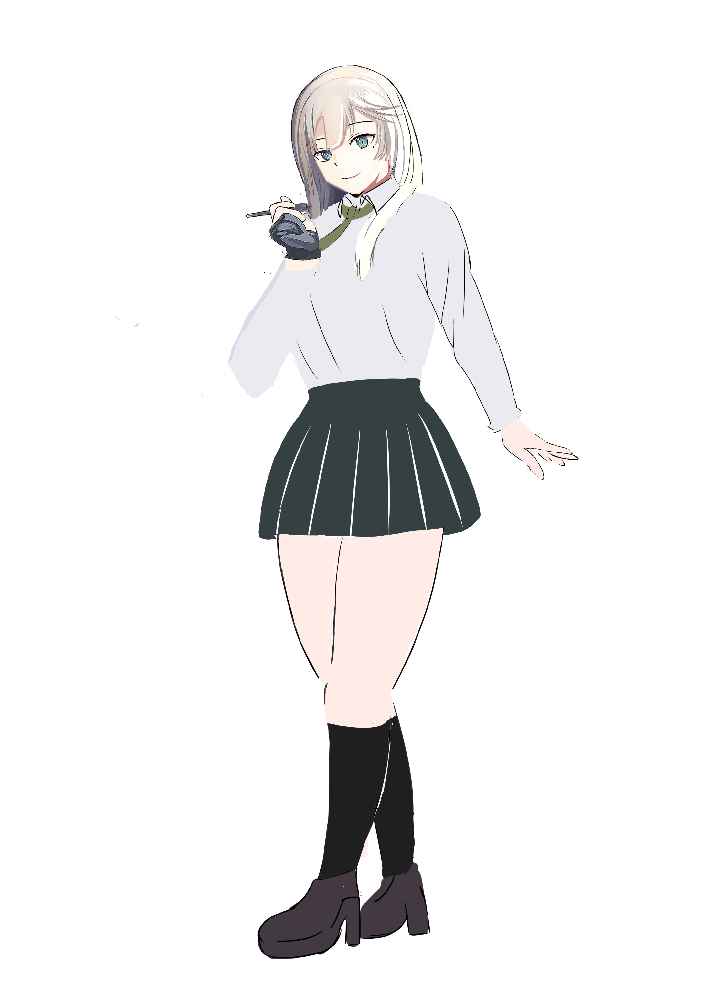
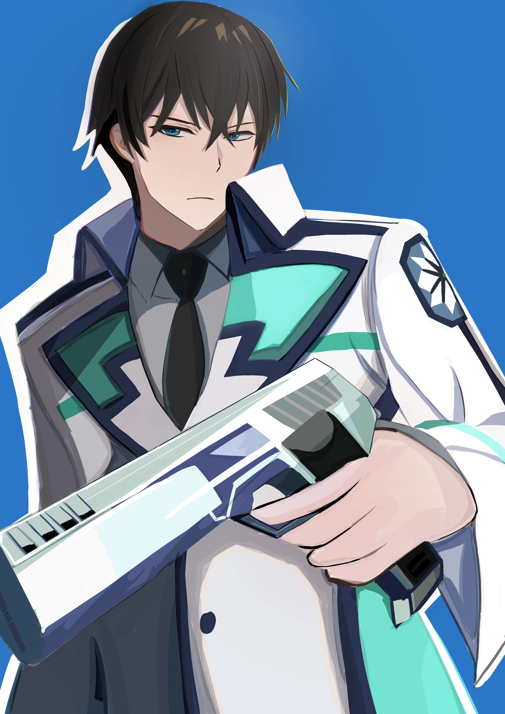
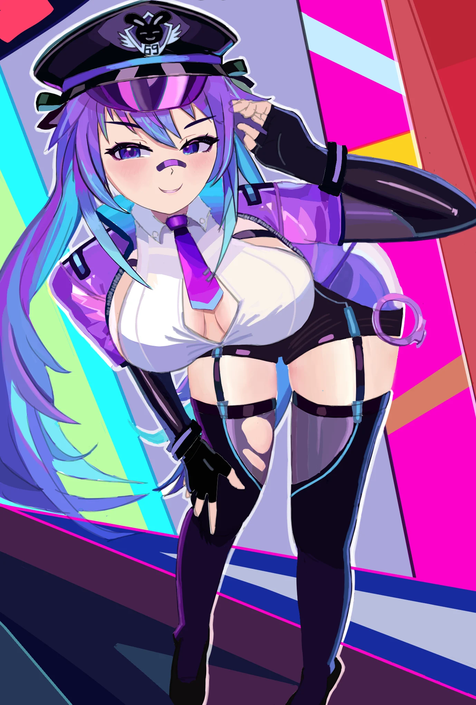
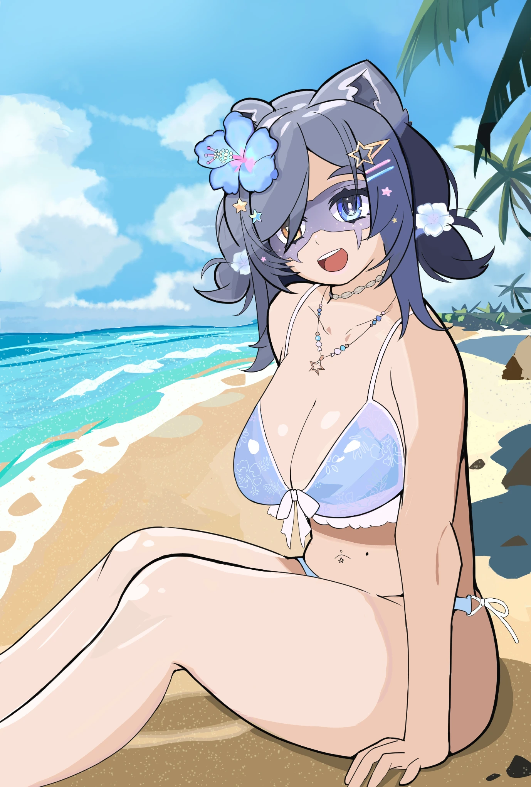

立ち絵

キャラクター概要
清楚で落ち着いた雰囲気の学生＋イラストレーターのキャラクターをイメージしてデザインしました。
シンプルなシルエットと、親しみやすい印象になるよう緑の配色とポーズを意識しています。
表情差分
※表情差分は現在制作中です。
フルカラーイラスト

フルカラーイラスト 01
キャラクターの可愛さと動き、光のコントラストを意識した一枚です。
フルカラーイラスト 02
動きのあるポーズと、画面全体のバランスを重視して制作しました。


フルカラーイラスト 03
既存のキャラクターに見えるように調整し、背景を単色にすることで、どんなキャラクターなのかが一目でわかるように作成しました。
線画サンプル
※線画サンプルは現在準備中です。
2025年5〜9月の作品（成長記録）
※現在の作風とは異なりますが、去年の作品を掲載しています。

去年の作品 01 (5月制作)
色のコントラストとキャラクターの存在感を重視した一枚です。
去年の作品 02 (9月制作)
キャラクターだけでなく、背景も重点的に描いた作品です。
